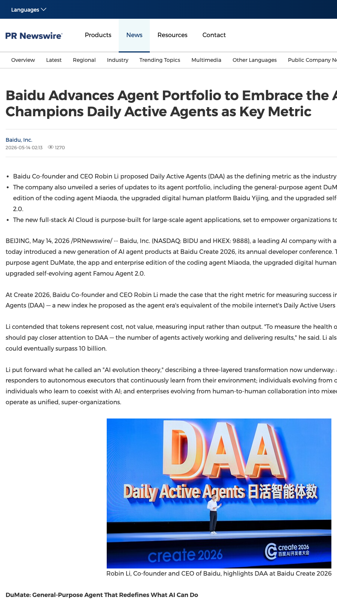
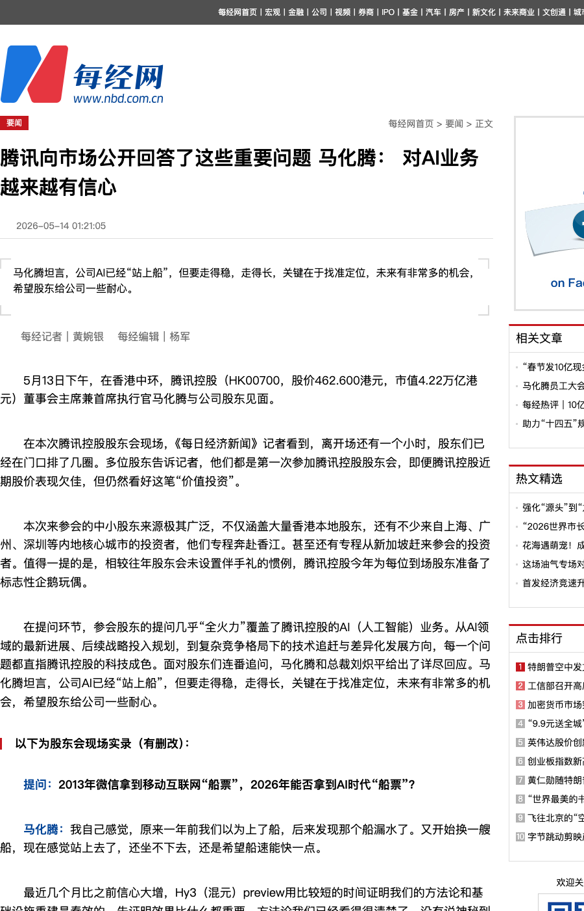
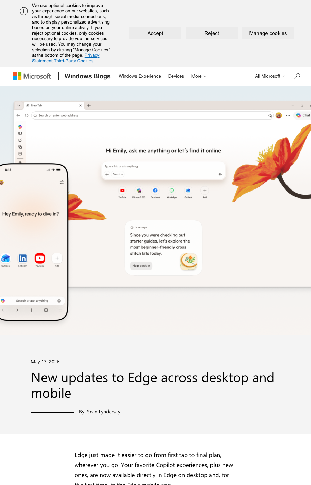

SuuJiKat AI Daily
AI 今天的共同信号：从“模型能做什么”转向“谁能把 Agent 做成可用规模”
2026-05-14 · AIGC 今日观察
过去大家争的是“模型更聪明一点”。但今天更值得看的，是 Agent 作为产品形态正在被重新定义：
百度把“Agent 生态”的健康指标从 token 拉回到 DAA（每天真正干活的 agent 数），并一口气推新一代 agent 产品线；腾讯把 AI 讲得更像平台工程：定位、方法论、生态合作，尤其是微信小程序生态如何被智能体激活；Microsoft Edge 则把 Copilot 进一步做进浏览器工作流：跨标签对比、基于历史的上下文、写作助手、学习模式……
SuuJiKat 的判断：AI 的下一阶段，不是更会回答，而是谁能把 agent 做成“可被日常反复使用的执行系统”。
今日目录
01｜百度 Create2026：提出 DAA 指标，并发布 DuMate / Miaoda / 数字人 / 自进化 Agent
02｜腾讯股东会：马化腾谈 AI“站上船”，下一步重点是平台与生态合作
03｜Microsoft Edge：把 Copilot 做进“浏览器内的推进式工作流”
01｜百度 Create2026：提出 DAA 指标，并发布 DuMate / Miaoda / 数字人 / 自进化 Agent

图：PR Newswire APAC 报道页面截图（含发布时间与要点）。
PR Newswire APAC 5 月 14 日报道，百度在 Create 2026 开发者大会上发布新一代 AI agent 产品线：通用 agent DuMate、编程 agent Miaoda（App 版与企业版）、升级后的数字人平台 Baidu Yijing，以及升级的自进化 agent Famou Agent 2.0。同时，李彦宏提出 DAA（Daily Active Agents） 作为 agent 时代的重要指标，并认为 token 更像“成本”而非“价值”。
SuuJiKat 判断
这不是一句口号，而是一次“指标迁移”：从算力与 token 的叙事，迁到“产出与活跃 agent”的叙事。
当 agent 真正进入生产，评价体系会更像平台：有多少 agent 在真实完成任务；是否能稳定调用工具、连通系统、跨端同步、持续迭代；生态能否围绕 agent 形成可复用的工作流与模板。
💡 DAA（Daily Active Agents）：类似 DAU（Daily Active Users），但统计的是“当天在真实执行任务并交付结果的 agent 数量”。它把关注点从“算了多少 token”转向“干了多少有效工作”。
02｜腾讯股东会：马化腾谈 AI“站上船”，下一步重点是平台与生态合作

图：每经网报道截图（含发布时间与现场问答摘要）。
每经网 5 月 14 日凌晨发布股东会现场报道：马化腾称腾讯 AI 已经“站上船”，近期信心大增，混元 preview 在较短时间内验证了方法论与基础设施重建有效；同时强调 AI 落地需要大量配套支撑（效率、成本、云端/端侧部署、生态利益分配等），策略是找准定位、守稳基本盘、与行业生态深度合作。智能体方向上，他提到微信生态海量小程序是“抓手”，腾讯更适合提供平台、工具与连接能力，让开发者基于既有生态自发做出行业智能化应用。
SuuJiKat 判断
腾讯这次讲 AI，最值钱的不是“追上了没有”，而是“怎么把 AI 变成生态增量”。
微信/小程序的优势不在于再做一个聊天机器人，而在于入口高频、任务碎片化、生态分工明确。一旦有了可用的 agent 基建与可分发的工作流，增长会来自开发者，而不是发布会。
来源：每日经济新闻（每经网）
03｜Microsoft Edge：把 Copilot 做进“浏览器内的推进式工作流”

图：Microsoft Edge Blog 原文截图（含发布日期与功能概览）。
Microsoft Edge Blog 5 月 13 日发布更新：在用户授权下，Copilot 可以跨多个打开的标签页推理与对比；基于浏览历史与过往对话提供更相关的回答；“Journeys”把浏览历史按主题组织，并给出摘要与下一步建议；同时在桌面端与移动端引入学习模式（Study and Learn mode）、写作助手（Writing assistant：生成草稿、改写、调语气）等，并宣布退役 Copilot Mode。
SuuJiKat 判断
浏览器正在变成 Agent 的“默认工作台”：上下文在、任务在、动作也在。
很多 AI 产品的失败，不是能力不够，而是入口太打断。Edge 的方向更接近真实工作流：直接读取你正在处理的上下文（多标签），把“摘要/比较/下一步”做成连续推进，用写作与学习等高频动作把 agent 变成日常工具。
今天的一个判断
Agent 的竞争会越来越像“生态与分发”的竞争：指标、入口、工具链、可复用工作流，缺一不可。
选 AI 工具别先问“它会不会写”，先问三件事：能不能进入流程、读到上下文、完成动作？能不能被复用（模板/工作流/自动化）？能不能被你控制（权限、数据边界、可追溯）？
来源
1) https://en.prnasia.com/releases/global/baidu-advances-agent-portfolio-to-embrace-the-agent-era-champions-daily-active-agents-as-key-metric-532920.shtml
2) https://www.nbd.com.cn/articles/2026-05-13/4391475.html
3) https://blogs.windows.com/msedgedev/2026/05/13/new-updates-to-edge-across-desktop-and-mobile/